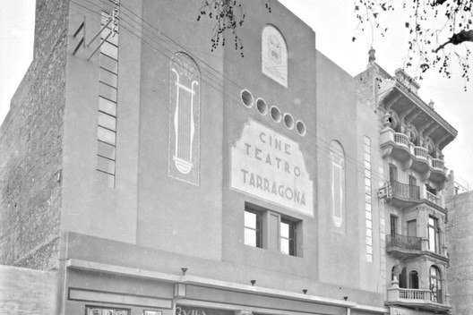
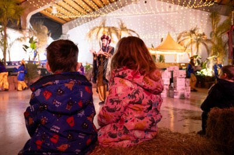
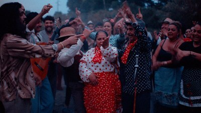

NOTÍCIES DESTACADES
Mantén-te al dia amb les últimes novetats culturals de Tarragona. Aquí trobaràs les notícies més rellevants, actualitzacions d'esdeveniments, entrevistes i tot el que passa a la nostra ciutat. Informa’t i no et perdis cap detall del que Tarragona té per oferir!
El Teatre Tarragona acull la presentació de la nova temporada de Primavera d’Arts Escèniques 2025

L’acte, amb format festiu obert a tota la ciutadania i entitats culturals de la ciutat, també ha comptat amb la inauguració de l’exposició ‘Teatre Tarragona 1924-2024’. La mostra inclou un recull de cartells, fotografies, plànols i documents històrics que expliquen les diferents èpoques d'aquest emblemàtic espai. Ha comptat també amb l’actuació de la reconeguda cantant de jazz i blues Andrea Motis.
13/12/2024
Una exposició clou la celebració del centenari del Teatre Tarragona
El Vestíbul del Teatre Tarragona acull aquest divendres 13 de desembre a les 19 h la inauguració de l’exposició ‘Teatre Tarragona 1924-2024’, mostra que tanca la celebració del centenari de la construcció del teatre a partir d’un recorregut visual de la mà de l’Arxiu i de Tarragona Cultura i que narra l'evolució del Teatre Tarragona des de la seva construcció fins a l’actualitat.
13/12/2024
Tarragona Cultura presenta la nova temporada de Primavera 2025
La temporada d'Arts Escèniques de primavera 2025 a Tarragona començarà el 28 de febrer i s'allargarà fins al 15 de juny, amb 55 espectacles per a tots els públics. Inclou obres de teatre, de circ, de dansa, òperes, concerts i espectacles d'humor i màgia. La temporada inclou obres destacades com "Tot ocells" de Wajdi Mouawad i "Un matrimoni de Boston".
13/12/2024
Dijous es posen a disposició les entrades per a visitar el Magatzem Reial
Els patges de Ses Majestats seran un any més a Tarragona per preparar tots els regals. Un any més l’Ajuntament de Tarragona i el Port de Tarragona, cedeixen als patges de Ses Majestats els Reis Mags d’Orient el Refugi número 1 del Moll de Costa per a ús de Magatzem Reial, un espai on els patges preparen i emboliquen tots els regals per poder-los repartir la nit del 5 de gener per tota la ciutat.
10/12/2024
Obertes les inscripcions per participar al Carnaval de Tarragona 2025
Les sol·licituds son per a entitats que vulguin proposar una activitat i per a comparses que vulguin participar. Amb motiu de la celebració del Carnaval de Tarragona per al 2025 que es farà del 21 de febrer al 4 de març; ja s’han obert les inscripcions per a la participació ja sigui com a comparsa per participar a la rua o com a entitat, presentant una activitat.
10/12/2024
Aquest dimecres arrenca la 24a edició del REC a Tarragona
Tarragona torna a acollir aquesta setmana una nova edició del REC. El Festival Internacional de Cinema de Tarragona arrenca aquest dimecres 4 de desembre amb la què serà la seva 24a edició, que s’allargarà fins aquest diumenge dia 8. El festival s'inaugurarà a les 19.30 h al Teatre Tarragona amb la preestrena de La guitarra flamenca de Yerai Cortés.
10/12/2024